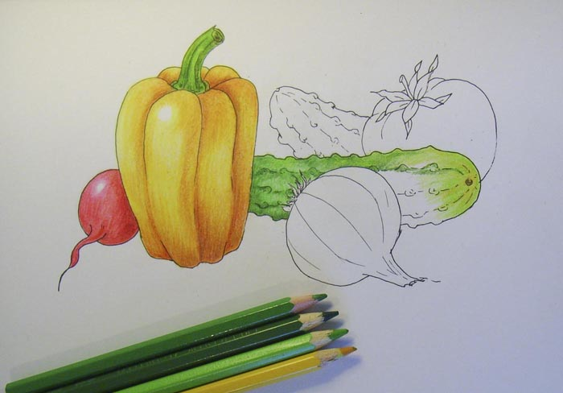

Урок малювання овочів кольоровими олівцями
Крок 1. Спочатку наведи контури овочів. Щоб композиція вийшла цілісною та гармонійною, намагайся, аби один овоч злегка ховався за інший.
Крок 2. Деталізуй зображення, надаючи кожному овочу характерної форми. Домалюй хвостики та листочки.
Крок 3. Обведи контури овочів за допомогою гелевої ручки та зітри олівець.
Крок 4. Найголовніше у натюрморті — правильно його розфарбувати.
Починаємо з перцю. Розфарбуй його жовтим олівцем, оминаючи зону відблиску світла. Місця впадин та нерівностей зафарбуй оранжевим та коричневим кольорами.
Крок 5. Зроби колір більш насиченим та допомогою різних відтінків оранжевого. Трішки уважності та наполегливості — і в Тебе все вийде!
Крок 6. Розфарбуй держак. Малюнок перця готовий.
Крок 7. Щоб розфарбувати редиску, заштрихуй її рожевим та поглиб колір за допомогою бордового та червоного олівців.
Крок 8. Зеленим, жовтим та коричневим олівцями розфарбуй огірки.
Крок 9. Цибулину можна розфарбувати жовтим, оранжевим кольорами та відтінками коричневого. Не забудь про відблиск!
Якщо на місця цибулини захочеш намалювати часник, його краще зафарбувати відтінками рожевого, фіолетового та синього кольорів.
Крок 10. Красень-помідор матиме насичений червоний колір. Збагатити забарвлення помідора допоможуть коричневий та бордовий олівці.
Крок 11. І насамкінець заштрихуй поверхню стола, на якому лежать овочі. Правильно зобразити тіні навколо овочів допоможе темно-коричневий олівець.